Ilha do Campeche: Mit dem Boot zur kleinen Insel vor dem Campeche-Strand, die oft „die Karibik von Florianópolis" genannt wird. Sie ist als archäologische Stätte mit prähistorischen Felsgravuren nationales Kulturerbe; die Zahl der Besucher pro Tag ist begrenzt. Weißer Sand, türkises Wasser – und neugierige Nasenbären, die unter den Büschen nach Essbarem suchen.
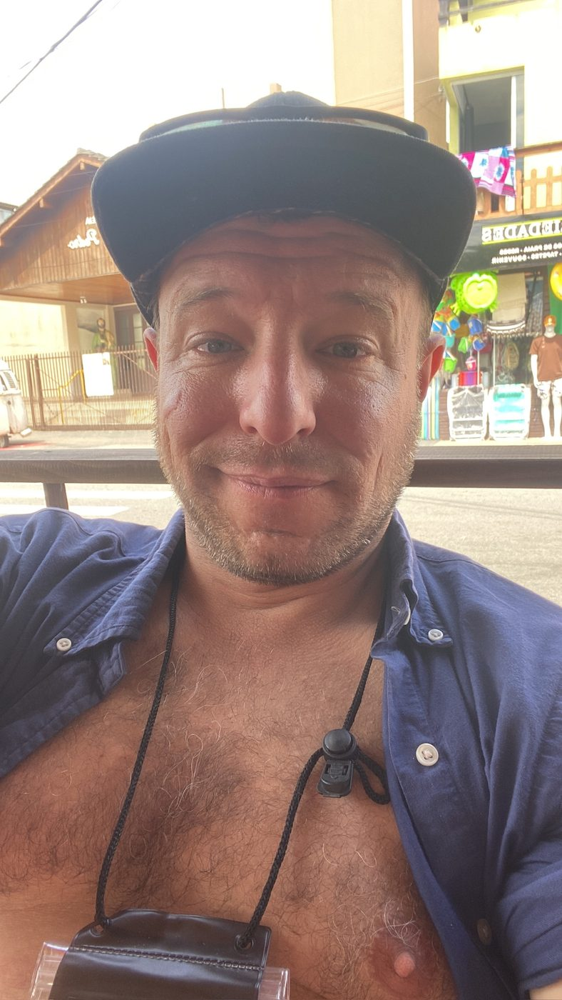
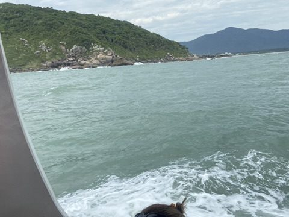
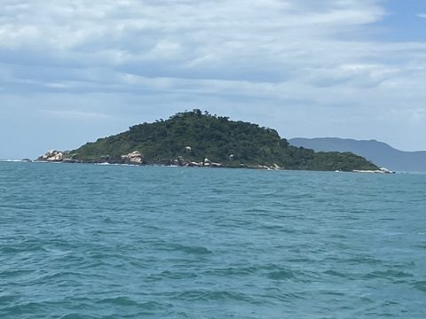
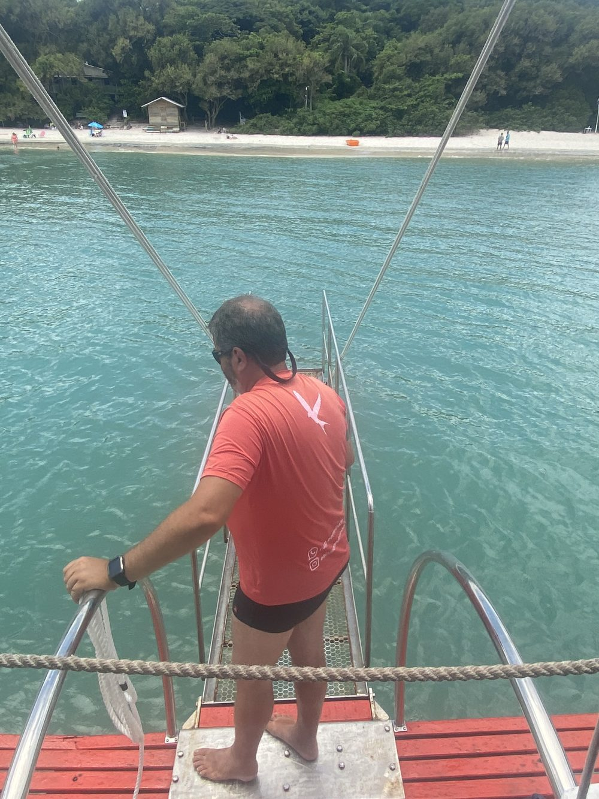
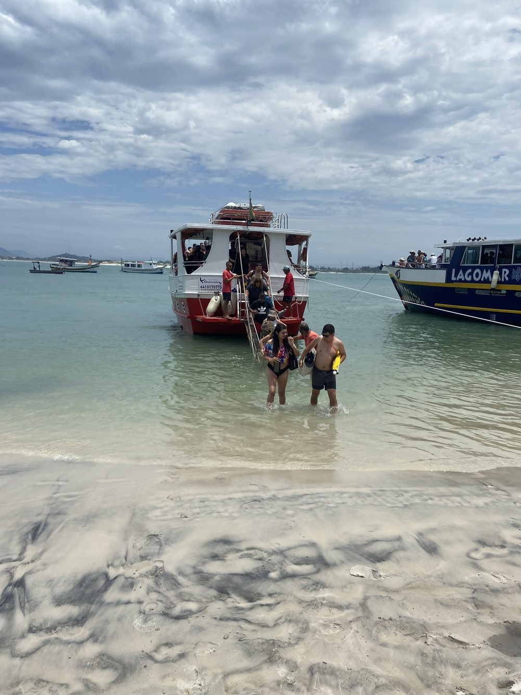
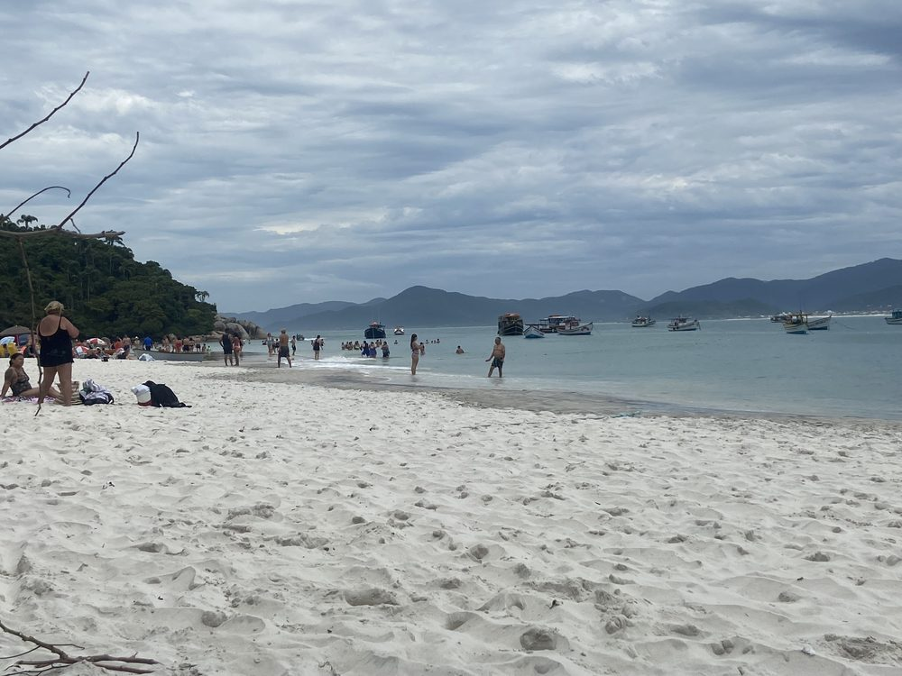
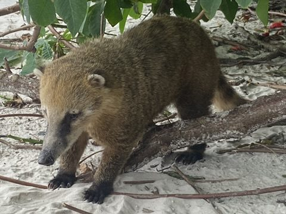
Nasenbären (Quatis) leben wild auf der Insel – füttern ist verboten.
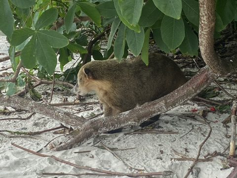
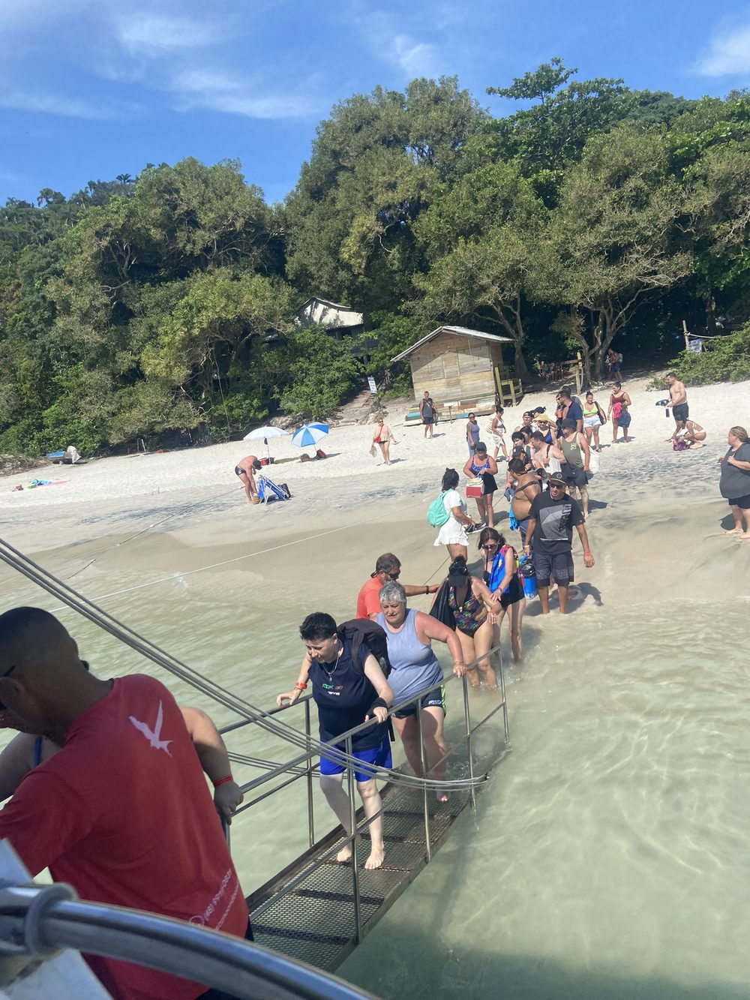
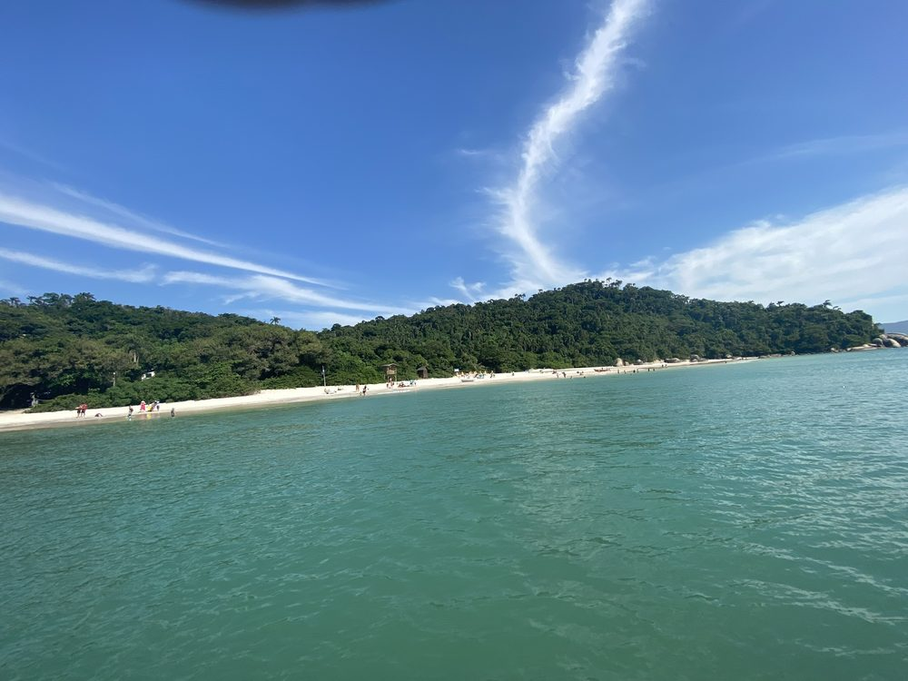
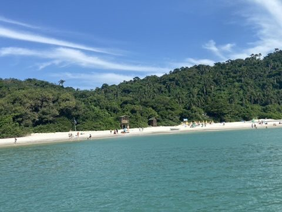
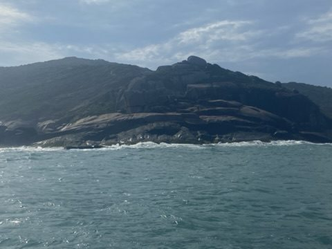
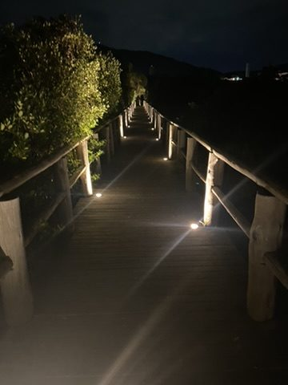